The goals of this project are to learn how to:
Please note that the main focus of the project is to apply graphics algorithms. The focus is not about art, game design, audio, etc. Don’t put too much effort in things that deviate from the main goal of the project.
Each student will be graded individually according to their contribution and understanding of the project. Each student is expected to understand all the covered topics about the rendering process using OpenGL.
For both phases, you should document your code in a clear and descriptive manner.
Other than code files, we have shader, model and texture files which are stored in the "assets" folder. We also have json configuration files inside the "config" folder.
The configuration files are split into folders based on the requirement they test. To allow testing each requirement in a batch, there are a set of scripts in the folder "scripts". In addition, there is a script to run all the tests for all the requirements which is "scripts/run-all.ps1" and another script to compare all the outputs with the expected output which is "scripts/compare-all.ps1".
To compile the code, you need CMake and a C++17 compiler. Thus, you CANNOT use an version of Visual Studio older than Visual Studio 2017. As alternatives, you can use GCC 9 (or newer) or CLang 5 (or newer).
If you are using Visual Studio Code with the CMake Tools extension, you should find the GAME_APPLICATION.exe inside the folder bin. You should run the executable using a terminal from the project folder where the execution command will be:
./bin/GAME_APPLICATION.exe
This will run the application using the default configuration file config/app.json. To run another configuration (e.g. config\app.jsonc), you should execute the command:
./bin/GAME_APPLICATION.exe -c='config/app.jsonc'
If you want the want the application to automatically close after a certain number of frames (e.g. 10 frames), you should run:
./bin/GAME_APPLICATION.exe -c='config/app.jsonc' -f=10
If you are working on Linux, remove the ".exe" from the path for the executable.
To run all the configuration in sequence, you can run scripts/run-all.ps1 on Powershell. You can select a certain subset of the configurations by setting the option tests. For example, to run all the sampler tests, you can run:
./scripts/run-all.ps1 -tests sampler-test
The screenshots should automatically be generated and added to the screenshots folder. Compare the results with the expected output from the folder expected. To compare the results, you can run scripts/compare-all.ps1. This script also supports the tests option similar to scripts/run-all.ps1.
If you have issues with running the scripts due to the execution policy, you could do the following to pypass it:
powershell -executionpolicy bypass -file ./scripts/run-all.ps1
powershell -executionpolicy bypass -file ./scripts/compare-all.ps1
For each the following requirements, you should write the code to solve the requirement and document your code in a clear and descriptive manner. You only need to modify the code at the locations marked as follows:
\\TODO: .......
For this phase, you should not modify any code outside the requirement TODOs.
The mesh is a collection of vertices and faces. In OpenGL, we define a mesh using 3 OpenGL objects:
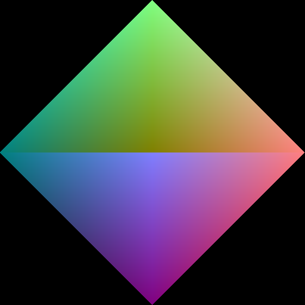
In the code, there is a class "Mesh" which is defined in source\common\mesh\mesh.hpp. You will have some TODOs to finish before the class is fully functional.
The Mesh class is tested by the MeshTestState which is run by the configurations in config\mesh-test. If your implementation of Mesh is correct, your outputs should match the expected outputs.
To draw different instances of a mesh at different positions, orientations and/or scales, we send a transformation matrix to the vertex shader as a uniform. The transformation matrix is used to transform the vertex positions from the object's local space to the world space.
Since matrices are not human friendly (not trivial to edit by hand), we store transformations in the files (as seen in config\transform-test) using 3 vectors:
We use a struct "Transform" to store these three vectors and during rendering, we should convert it to a 4x4 Matrix. Transform is defined in source\common\ecs\transform.hpp and source\common\ecs\transform.cpp and you will have some TODOs to finish before the struct is fully functional. You also have a TODO in assets\shaders\transform-test.vert.
IMPORTANT NOTE: In the configuration files, we store the rotation angle in degrees but we convert them to radians during deserialization. So, you don't need to convert them to radians by yourself.
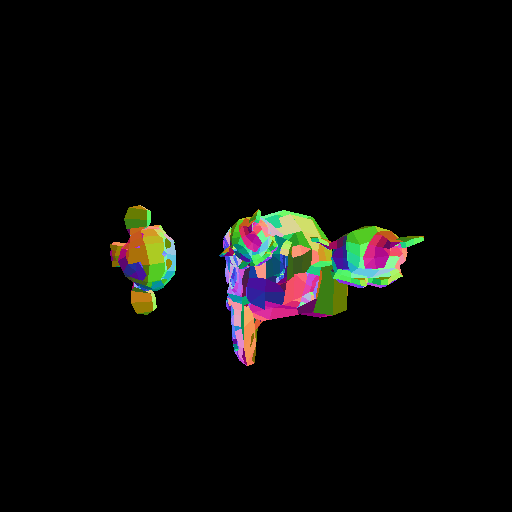
The Transform struct is tested by the TransformTestState which is run by the configurations in config\transform-test. If your implementation of Transform is correct, your outputs should match the expected outputs.
OpenGL is a state machine where the options we pick are stored in the OpenGL context and affect the upcoming draw calls. Since each object may require different options while drawing (e.g. transparent objects require blending while Opaque objects don't), we would need to store the options for each object in a data structure and set the OpenGL options to match the given options before drawing.
This is where we use the "PipelineState" structure which we will use to store the depth testing, face culling, blending and color/depth mask options. The setup function of the PipelineState sets the OpenGL options to match the ones stored in the corresponding PipelineState instance.
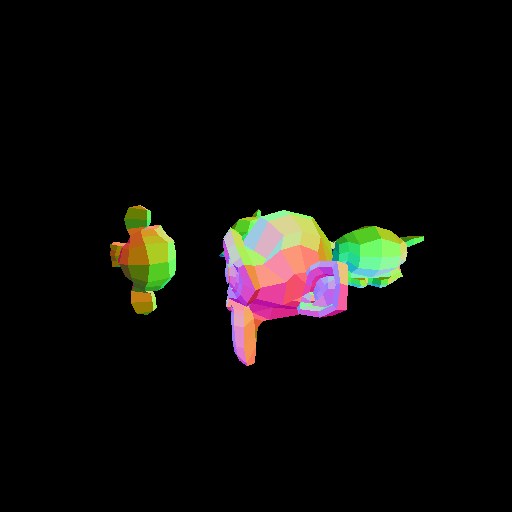
The PipelineState struct is defined in source\common\material\pipeline-state.hpp and source\common\material\pipeline-state.cpp. You will have some TODOs to finish before the struct is fully functional.
The PipelineState struct is tested by the PipelineTestState which is run by the configurations in config\pipeline-test. If your implementation of Pipeline is correct, your outputs should match the expected outputs.
A 2D Texture is a sampleable storage containing a 2D array of pixels. By "sampleable", we mean that we can sample a color from it in the shaders.
In the code, there is a class "Texture2D" which is defined in source\common\texture\texture2d.hpp. You will have some TODOs to finish before the class is fully functional. To load a texture from an image file, you will find a loadImage function defined in source\common\texture\texture-utils.hpp and source\common\texture\texture-utils.cpp. You will have some TODOs to finish before the class is fully functional. There is also a TODO inside the function empty function which will be needed in Requirment 10.
Finally, you will need to finish the fragment shader assets\shaders\texture-test.frag.
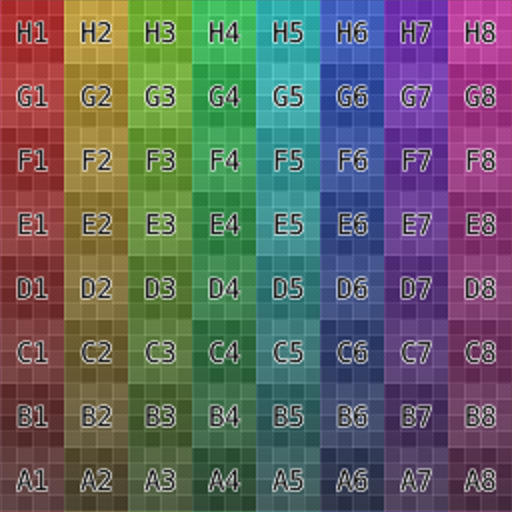
The Texture class and loadImage function are tested by the TextureTestState which is run by the configurations in config\texture-test. If your implementation of Texture2D and loadImage is correct, your outputs should match the expected outputs.
There are more than one way to sample a texture. For example, we can choose between nearest or linear filtering and we can select between different wrapping options. A sampler is an OpenGL object that can store the sampling options to use while sampling a texture.
In the code, there is a class "Sampler" which is defined in source\common\texture\sampler.hpp and source\common\texture\sampler.cpp. You will have some TODOs to finish before the class is fully functional.
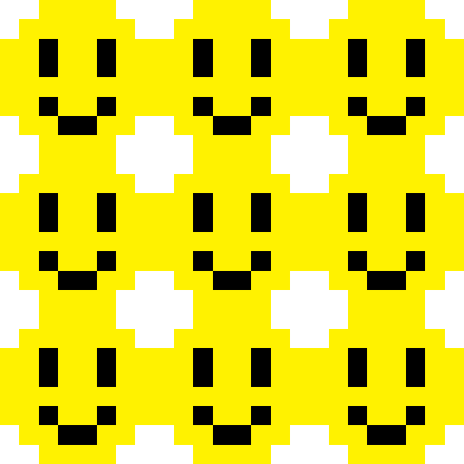
The Sampler class is tested by the SamplerTestState which is run by the configurations in config\sampler-test. If your implementation of Sampler is correct, your outputs should match the expected outputs.
In the previous phase and the previous requirements, we learned about shaders, pipeline states, textures and samplers. We also learned how to use them to define how an object should be drawn and how it will look. Now we want to combine all of that into one class which we will call "Material".
In our engine, a material answers the following questions:
Since there are lots of different types of Materials, we chose to create a base class for all materials (which we call "Material") and we inherit from it to create more specific materials (e.g. "TintedMaterial" and "TexturedMaterial").
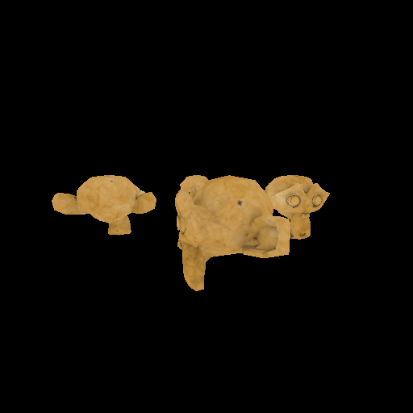
You will find the base class "Material" and the two derived classes "TintedMaterial" and "TexturedMaterial" defined in source\common\material\material.hpp and source\common\material\material.cpp. You will have some TODOs to finish before the class is fully functional. You will also need to finish the followings shaders:
assets\shaders\tinted.vert & assets\shaders\tinted.fragassets\shaders\textured.vert & assets\shaders\textured.fragThe Material classes are tested by the MaterialTestState which is run by the configurations in config\material-test. If your implementation of Material is correct, your outputs should match the expected outputs.
Now, we want to organize our code in a form that would allow us to easily extend our application. To do this, we will implement an entity-component-system framework.
An entity-component-system ECS framework consists of 3 parts:
For the sake of organization, we will add one more class called "World" which is a container of entities. And to keep the code simple, we will define the entity transformation directly inside the entity class (instead of defining a transform component). The entity transformation will be specified by: localTransform which defines the entity's transformation relative to its parent and parent which defines the entity's parent (or null if the entity is a root).
In this requirement, we will focus on 3 classes:
source\common\ecs\entity.hpp and source\common\ecs\entity.cpp.source\common\components\camera.hpp and source\common\components\camera.cpp. This specifies that its owning entity in a camera and contains the data needed to construct the camera projection matrix (except the aspect ratio which is computed using the window size). This component does not store any data about the camera position or orientation since it can be retrieved from the owning entity.source\common\components\mesh-renderer.hpp and source\common\components\mesh-renderer.cpp. This specifies that its owning entity is a drawable object. This class contains the material and the mesh used to draw this object.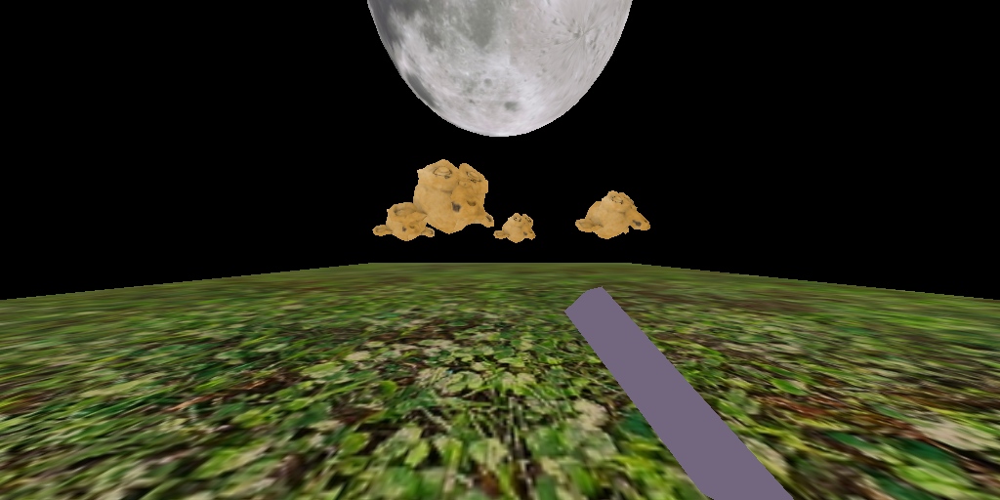
Both the Entity and the CameraComponent classes contains TODOs that should be finished. Then go to the "EntityTestState" and finish the available TODOs. The EntityTestState is run by the configurations in config\entity-test. If your implementation of the TODOs is correct, your outputs should match the expected outputs.
Finally, we want to isolate the rendering code into a separate system. The "ForwardRenderer" system class is defined in source\common\systems\forward-renderer.hpp. You will have some TODOs to finish before the class is fully functional.
The difference between the implementation of the forward renderer system and the previous requirement is that the forward renderer will handle the transparent objects by sorting them by the distance along camera forward direction. The draw order of transparent objects is from far to near.
NOTE: We called this system a forward renderer since it uses forward rendering (which is what we were learning during the tutorials). There are more complex rendering techniques such as deferred rendering, light pre-pass rendering and tiled/clustered forward rendering which are outside the scope of this project.
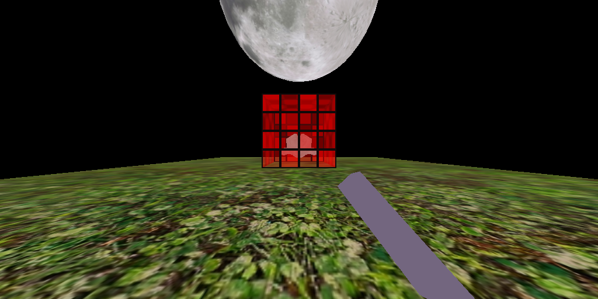
The ForwardRenderer class is tested by the RendererTestState which is run by the configurations in config\renderer-test. If your implementation of ForwardRenderer is correct, your outputs should match the expected outputs.
A background that is a single color is boring. We want to modify the "ForwardRenderer" system class (defined in source\common\systems\forward-renderer.hpp) to draw a sky sphere around the camera. You will have some TODOs to finish in order to render the sky.
A couple of notes about rendering skies:
z = 1 for every pixel of the sky in the Normalized device coordinates space. How?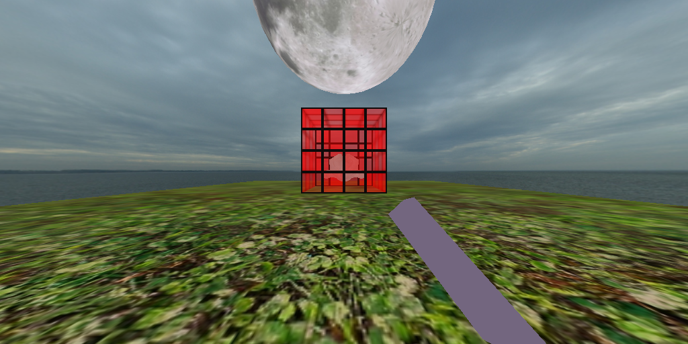
Sky rendering is implemented the ForwardRenderer class which is tested by the RendererTestState. To test the sky, run the configurations in config\sky-test. If your implementation of ForwardRenderer is correct, your outputs should match the expected outputs.
Sometimes, we want to apply an image effect on the rendered scene. This is called postprocessing which can be applied by rendering the scene to a texture and then render the texture to the screen using the effect shader. We want to modify the "ForwardRenderer" system class (defined in source\common\systems\forward-renderer.hpp) to render the scene to a framebuffer (containing a color and a depth target), then render the color target to the screen using one of the postprocessing shaders. You will have some TODOs to finish in order to apply postprocessing effects. Don't forget to finish the TODO inside the function empty which you can find in source\common\texture\texture-utils.cpp. In addition some postprocessing shaders (assets\shaders\postprocess\vignette.frag and assets\shaders\postprocess\chromatic-aberration.frag) are incomplete, so you will need to finish them.
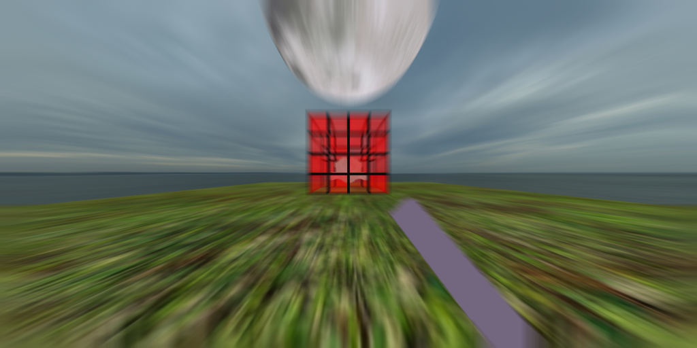
Postprocessing is implemented the ForwardRenderer class which is tested by the RendererTestState. To test the sky, run the configurations in config\sky-test. If your implementation of ForwardRenderer is correct, your outputs should match the expected outputs.
This is a list of the requirements with their corresponding files:
source\common\mesh\mesh.hppsource\common\ecs\transform.cppassets\shaders\transform-test.vertsource\common\material\pipeline-state.hppsource\common\texture\texture2d.hppsource\common\texture\texture-utils.cppassets\shaders\texture-test.fragsource\common\texture\sampler.hppsource\common\material\material.cppassets\shaders\tinted.fragassets\shaders\textured.fragsource\common\ecs\entity.cppsource\common\components\camera.cppsource\states\entity-test-state.hppsource\common\systems\forward-renderer.hppsource\common\systems\forward-renderer.hppsource\common\systems\forward-renderer.hppsource\common\texture\texture-utils.cppassets\shaders\postprocess\vignette.fragassets\shaders\postprocess\chromatic-aberration.fragThe following diagram shows the relationship between the classes (and structs) in the project:
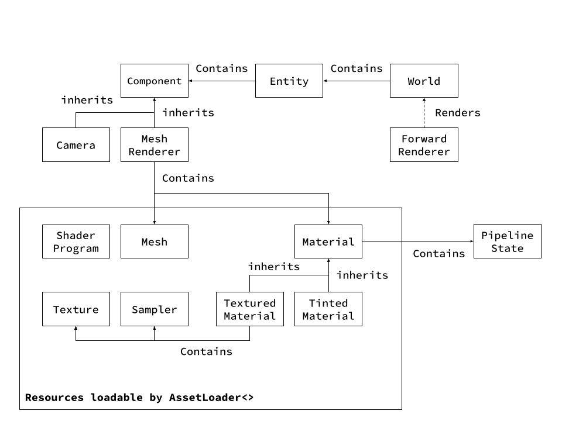
Phase 2 should be delivered on Saturday 7th May 2022 23:59 and discussed in the tutorial during Week 12.
The delivered files should only include the modified files. Only one member of each team needs to deliver the project on blackboard.
The goal of this phase is to deliver a simple game implemented using the framework implemented in the previous phases.
Since we already have an ECS framework with a forward renderer, we want to add lighting support to it. To do this, we should do the following:
The renderer and the shaders should support having more than one light affecting the same object and these lights can have different parameters (types, positions, color, etc).
In this requirement, we implement a game using the render engine we already built. The game must satisfy the following requirments:
NOTE: you are allowed to use external libraries for functionalities that are not related to rendering. For example, you can use a physics engine to support collisions and physics, and if youn wish to add audio, you can use an audio library.
By Week 11 Saturday 30th April 2022 23:59, you should submit a game proposal. It should contain a game name, a paragraph describing the game and an image demonstrating the game idea. The description should describe how the game will be played and what is the goal of the game. Don’t forget to add the team member names, IDs and team number. Some example proposals are included in the appendix. Only one member of each team needs to deliver the game proposal on blackboard.
With Phase 3, you have to submit a PDF report that contains the following:
Phase 3 should be delivered on Saturday 21st May 2022 23:59 and discussed in the tutorial during Week 14.
You should deliver all the project files except the "bin" and "build" folders. Including any of these 2 folders will cause your project to be penalized. Only one member of each team needs to deliver the project on blackboard.
Lamazone online shopping service has built the perfect delivery robot, a robot that can never stop moving. You play as a RoboLarry who is new to the job and has to finish his daily delivery quota. Your battery is limited and you can only hold one package at a time. Go to storage locations to take a package and deliver them to their corresponding customers. Steer left and right to avoid hitting buildings and moving cars and collect batteries on the road to recharge. Beware, the more energy you have, the faster you’ll move.
Example Image (Drawn in Paint)
The army of light is approaching the city of the demon lord so he hires you, the underworld engineer, to build him a defense system against them. Add turrets, traps, and other obstacles to stop them from reaching the demon lord’s castle. Collect coins from dead knights to buy more tools and materials.
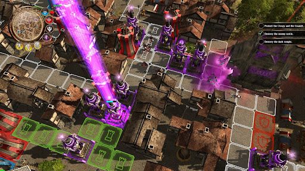
Example Image (Photo from Defenders of Ardania)
It was a nice day so you went shopping with your friends. Unfortunately, the zombies thought it was a nice day to go shopping too. Use your machine gun to make sure they are dead again. Get all the shopping items you want and get to the cashier without allowing any zombie to bite you. Shoot them if they get near you.
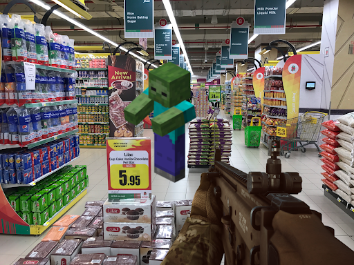
Example Image: (Assembled together in GIMP)